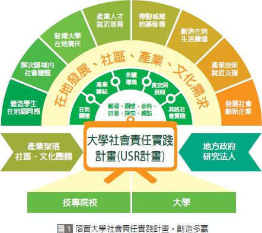

大學的責任是什麼？「除了教育人才、進行學術研究之外，還有以專業知識與技術協助地方、國家共同成長，」多所大學校長談起辦學使命時，都異口同聲指出這項大學責無旁貸的工作。尤其全臺大學在學人口數高達123萬人，這支百萬軍團擁有最豐沛的資源，絕對可以成為推動社會進步的力量。
在南臺灣，成功大學一直是企業最愛大學生排行榜上的常勝軍，成大校長蘇慧貞抽絲剝繭找出原因，發現是成大培育學生的目標，不僅只有追求學術研究的卓越，成大也不斷在創造平臺，促使學生與產業之間有更多連結，尤其與在地產業的對話、合作，攜手共創區域繁榮，因而得到企業認同。
譬如，臺南是漁業養殖重鎮，成大生物科學與科技學院就以國際產業規格建造出永續水產養殖業基地，並成功選育出具抗白點病毒的草蝦，建立無毒安全的水產技術與養殖場所。成大不獨享成就，也把技術傳傳授給在地漁民，除了可以改善漁業資源的短缺問題，還能提升漁民的經濟收益。
在中臺灣，可以遇見一個龐大的工具與精密機械聚落，從臺中到雲嘉南之間，共有1,500家相關廠商聚集在此，創造出9,000億的年產值。而位處在嘉義的中正大學前瞻製造系統中心便以地利之便，成為這一家家世界隱型冠軍背後的研發後盾，中正除了與世界大廠合作開發技術，更大貢獻是扶植地方中小企業發展，從基層帶動臺灣邁向工業4.0。
一所大學，可以促成一個產業成長，更可以帶動一個地方的繁榮或創生。
這股大學自發的能量正在全球漫延開。臺北醫學大學跨領域學院執行長吳明錡，同時也是教育部大學社會責任支持系統計畫主持人指出，包括日本「地方知識據點推動計畫」、歐盟「伊拉斯摩斯計畫－大學社會責任計畫」與英國「教學卓越架構」都在鼓勵大學落實社會責任。
以日本為例，因為人口老化導致許多城鎮殞落，預估到2050年將引發900個鄉鎮消失危機，為此，近幾年積極以「地方創生」改善城鄉差距，其中以大學搭配地方規劃發展願景，中央政府主導稅制改革、資源重新分配、交通運輸改善等措施，讓人才願意流動到東京、大阪、名古屋之外的城鄉，抑制城鄉人才空洞化危機，並重振地方經濟。
吳明錡指出，綜觀全球大學在實踐社會責任時，可歸納出3項共同點：1.促使大學面對全球高度競爭時，也能重新思索大學的使命；2.透過計畫執行，整合校內、跨校的特色專長；3.創造青年跟地方、產業合作的平臺，增加青年工作、創業機會。
在這股浪潮下，2016 年10月國際大學校長協會（International Association of University Presidents, IAUP）號召全球大學，將聯合國17項永續發展目標融入大學的發展策略，期望藉此建立跨校、跨國、跨領域、跨產業、跨世代的共同語言，這17項永續發展目標，之後也成為臺灣各大學實踐社會責任的重點範疇。
